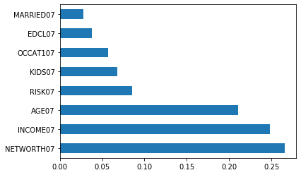

Roboadvisor
Predicts risk tolerance level with machine learning,
manually add or remove preferred assets,
visualise portfolio allocation and earnings all on the dashboard.
Risk Tolerance Model
Using machine learning to predict risk tolerance of user
 Seven features (figure on left excl. net worth) were identified to have effect on the risk tolerance of users. Next, k-Fold Cross-Validation was employed to assess the model performance as it provides a range of accuracy scores across different data sets.
Following that, a grid search was used for the Random Forest Regressor to find the best parameters. As it is a regression model, R2 scoring was used to assess the model performance. The bar chart on the above illustrates the feature importance in the model. The last step is to save the model for it to be used when creating the dashboard.
| Set | Metric | Value |
|---|---|---|
| Test Set | Mean Squared Error | 0.001249 |
| Test Set | R2 Score | 0.9619 |
| Validation Set | Mean Squared Error | 0.006013 |
| Validation Set | R2 Score | 0.8156 |
Roboadvisory Dashboard
Python Dash as a framework for building an interactive dashboard
The dashboard allows users to select their own profile; the risk tolerance is automatically generated based on the user inputs into the machine learning model created earlier.
The user is free to select any number of assets within the investment universe (S&P 500). After selection, the portfolio weightage is generated using convex optimisation and the results are displayed onto a bar chart.
Lastly, a graph of a $100 investment allows users to visualise their returns from a roboadvisory portfolio over the course of a few years. Video included below to showcase dashboard interactivity.